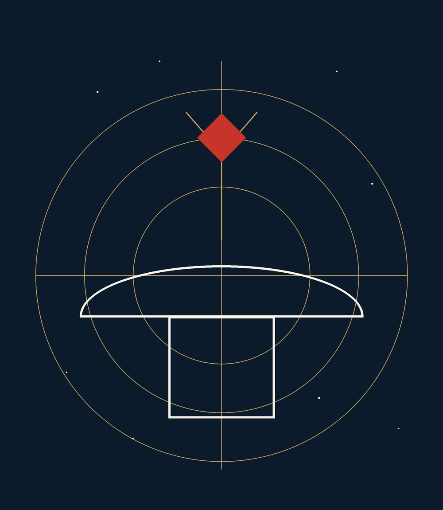
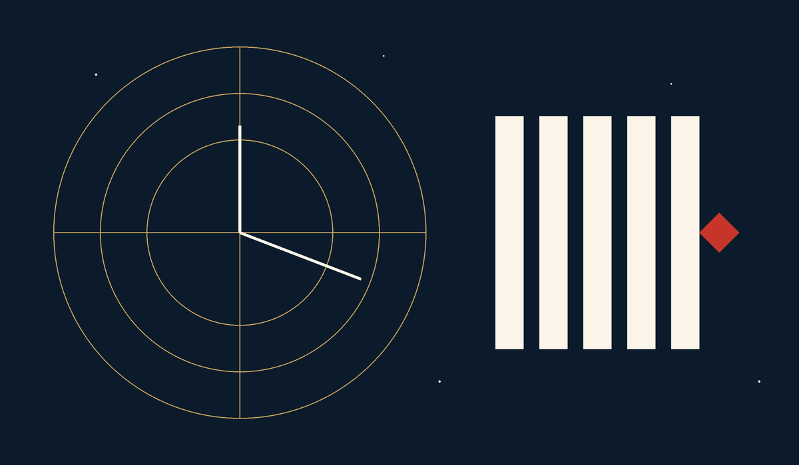

# The Locked Observatory A one-shot for FIST, written as an original layout proof for the Translation Studio demo. It is not a real published module. ## The Observatory A brass dome sits on a hill that is not on any map. Inside, the air smells of cold oil and rain. The last astronomer left the telescope pointed at a star that should not be visible from Earth. **Read aloud:** The dome opens without a sound. Above you, the sky is full of stars — and every one of them is moving in the same direction, toward the center of the room. **Rule:** Anyone who looks through the telescope must roll 2D6 + CREATIVE. On a 6 or less, they see the star looking back. ### Floors | Floor | Phenomenon | Danger | |---|---|---| | Dome | Moving constellations | 1 | | Library | Books rewritten overnight | 2 | | Clock room | Time runs backward | 3 | | Basement | The star's reflection | 4 | **Note:** The observatory is a trap, not a dungeon. Every room wants the operatives to look up. ## The Clock Room The clock room has no clock. It has twelve doors, and each one is ticking. **Read aloud:** The walls are warm. Somewhere behind them, a very large clock is counting down. ### Clock anomalies (d6) | d6 | Anomaly | |---|---| | 1 | Your shadow arrives a second late. | | 2 | A door opens onto the same room. | | 3 | Every clock in your pocket shows 11:59. | | 4 | The room remembers a conversation you have not had. | | 5 | The star's light bends around a person. | | 6 | The clock strikes thirteen. | ### Guard rotation | Turn | Guard | Action | |---|---|---| | 1 | The Minute Hand | Blocks the east door | | 2 | The Hour Hand | Checks the telescope | | 3 | The Second Hand | Resets the room | ### Clock Warden | Stat | Value | |---|---| | HP | 8 | | Armor | 1 | | Attack | 2D6 + TACTICAL | | Weakness | Mirrors | The Warden does not speak. It repeats the last sentence anyone said in the room, in the voice of the person who said it. ### Loot | Item | Type | Effect | |---|---|---| | Brass key | Tool | Opens one door that is not there | | Star lens | Gear | See one minute into the future | | Thirteen coins | Consumable | Each coin buys one honest answer | **Note:** If the operatives take the star lens, the Warden follows them out of the observatory. It never enters a church.

